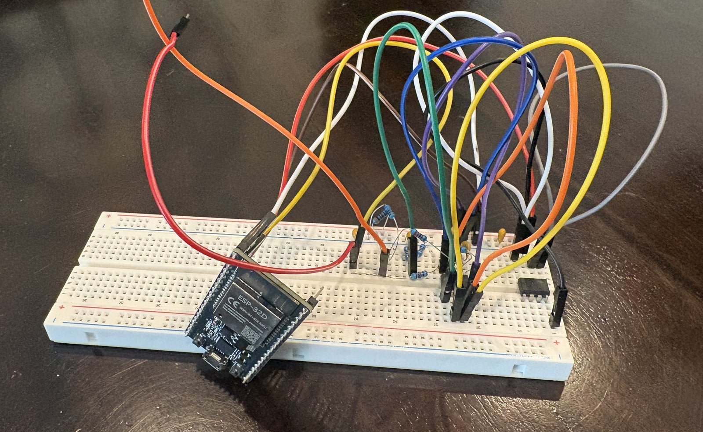
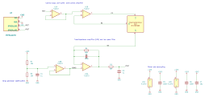

Selected Work
Robotics
Robotic Arm - Stereo Object Detection
Stereo vision pick-and-place system using two webcams to detect objects, locate them in 3D, transform the coordinates into the robot coordinate system, and send target coordinates to a robotic arm.
Features
- YOLOv8 object detection
- HSV color detection
- Stereo camera 3D localization
- Camera-to-robot coordinate transformation
- Modbus TCP communication with the robotic arm
How It Works
- Capture images from two cameras
- Detect the object in both images
- Use stereo vision to calculate its 3D position
- Transform the position into the robot coordinate system
- Send the coordinates to the robotic arm
- The robot picks and places the object
Tech Stack
- C#
- .NET
- OpenCV / OpenCvSharp
- YOLOv8
- Modbus TCP
- Stereo Vision
Biosensor
Multi-Analyte Biosensor
Independent research project focused on developing a low-cost potentiostat for non-invasive sweat analysis.


Project Overview
- TLV272-based potentiostat circuit design
- Detects blood sugar, cortisol, blood alcohol, lactate, and vitamin C
- Reverse iontophoresis for non-invasive interstitial fluid extraction
- Goal of continuous sensing without skin puncture
Resume
View my resume for experience, technical skills, education, and projects.
View Resume